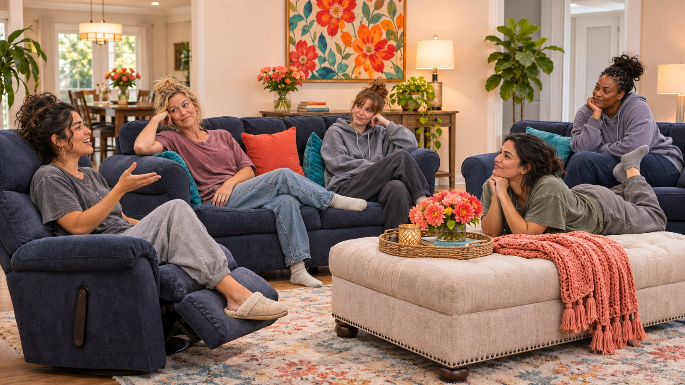
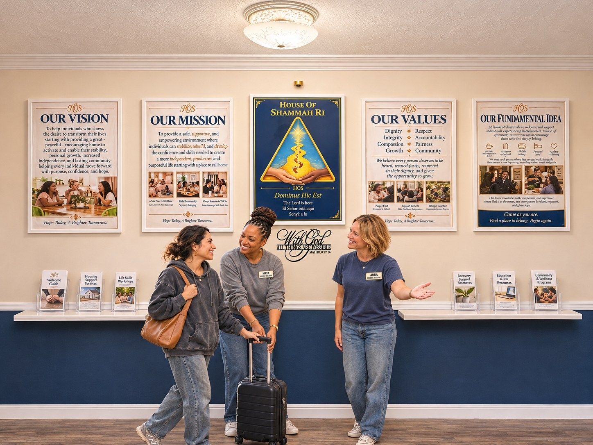
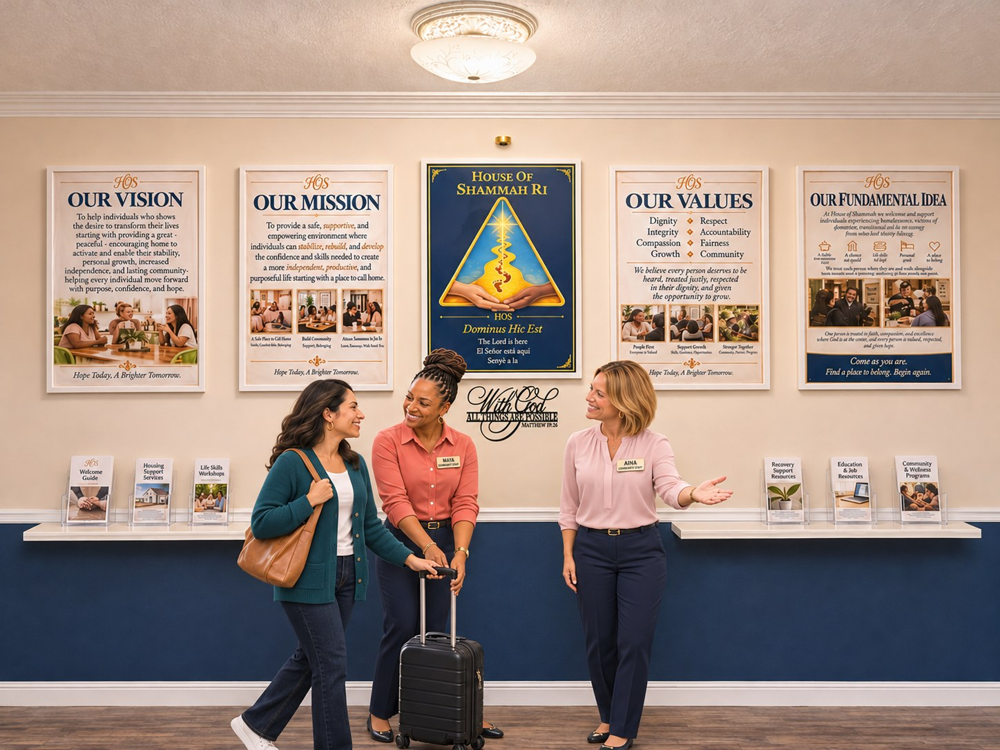
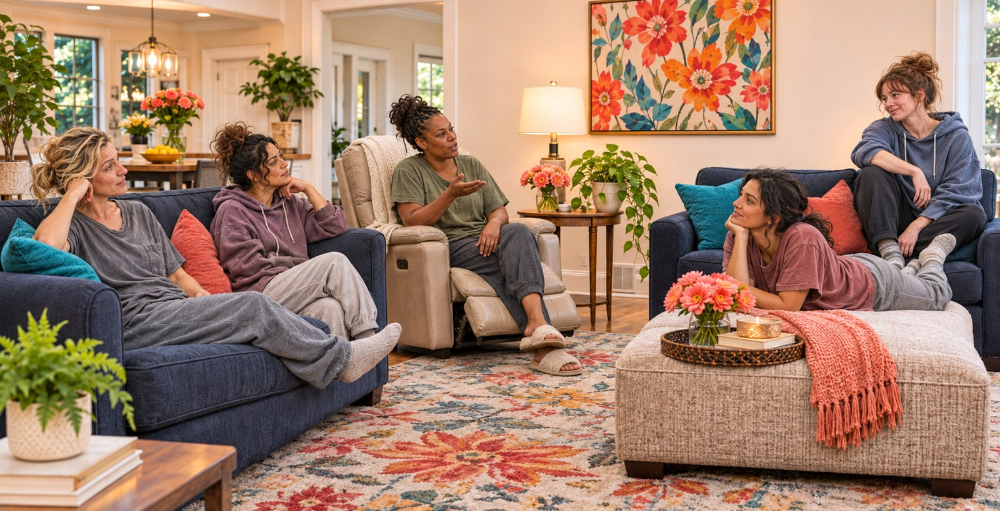
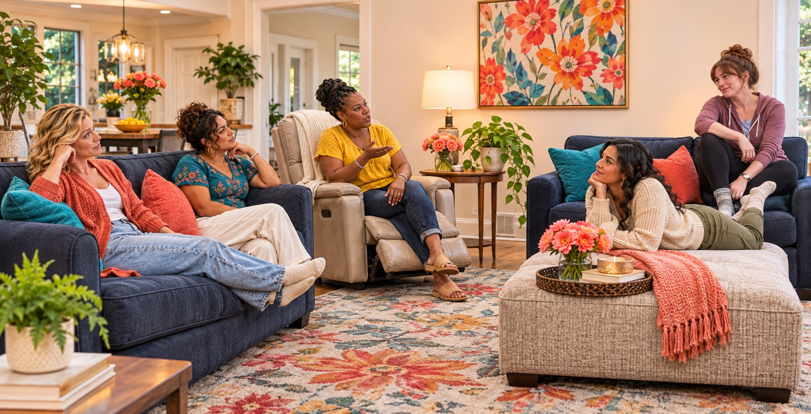
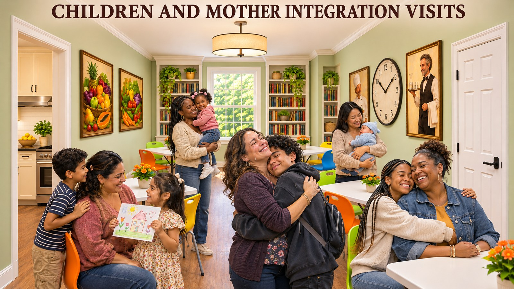
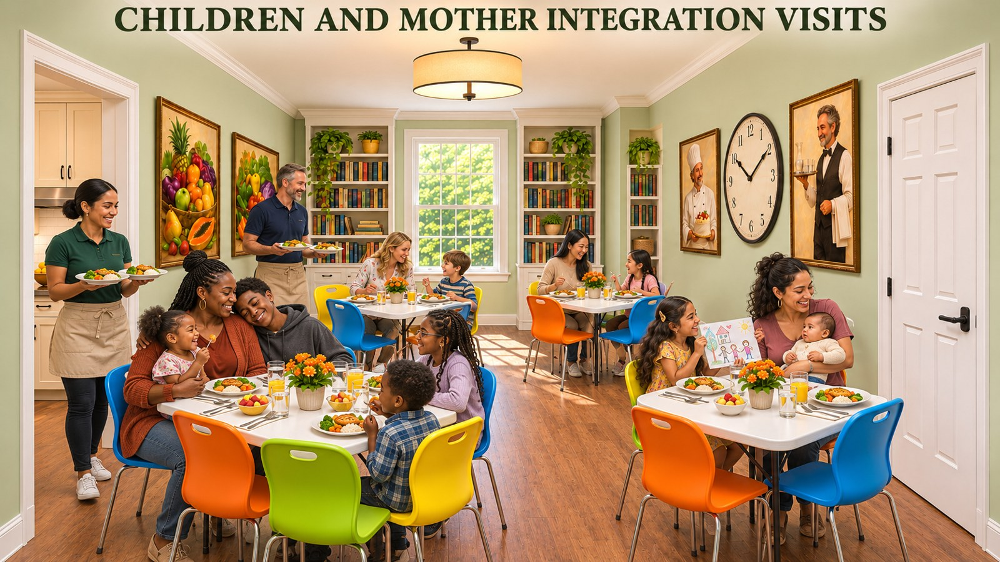
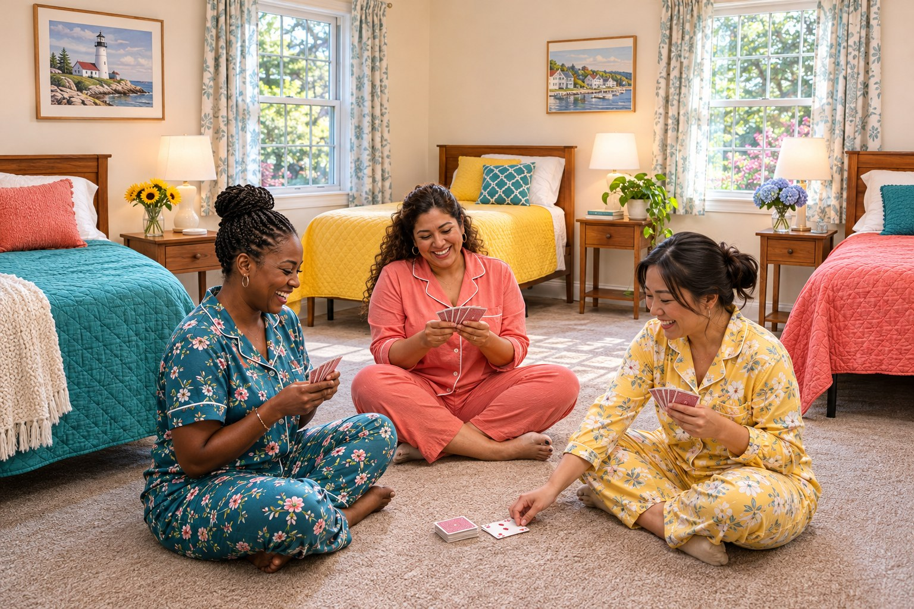
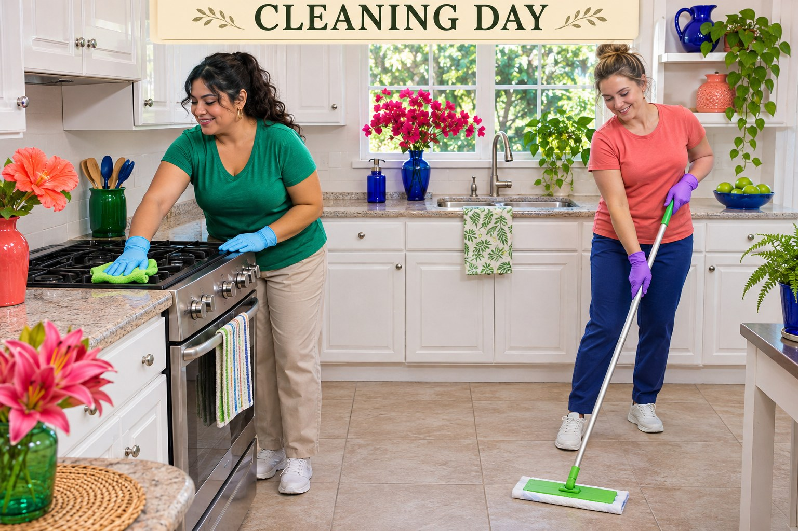
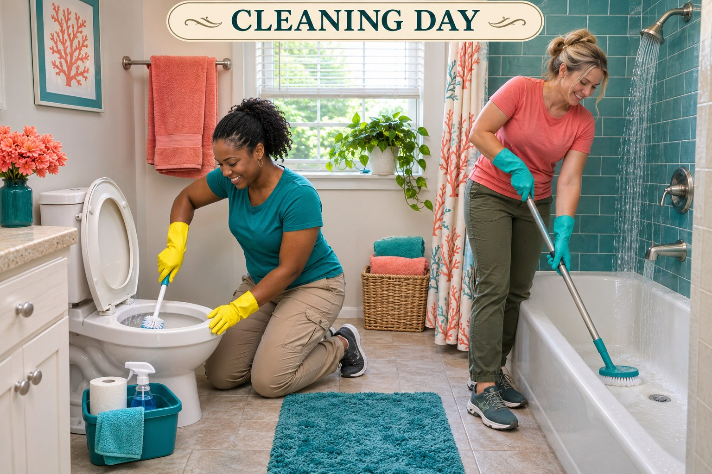

Life at House of Shammah
Warmth in the everyday.
A picture of connection, encouragement and shared life. All people on this page are fictional; these illustrations express the HOS community vision.


Comfort and connection
Come as you are.
A supportive atmosphere can include comfortable clothes, a shared coffee and someone who makes time to listen.
These scenes celebrate dignity at every stage. Clothing and photographs do not measure recovery progress.

A thoughtful welcome
A small kindness. A warmer beginning.
A welcome basket, a bottle of water and a friendly conversation express the caring atmosphere we want every newcomer to experience.
Two intentional styles
Everyday comfort. Photoshoot confidence.
Casual welcome and dressed-up photoshoot illustrations, shown as styling comparisons—not actual before-and-after recovery outcomes.
Casual welcome


Photoshoot day


Relaxed living-room conversation


Dressed for a community photoshoot


Family connection
Mother and child visit-day vision.
Warm reunion and family-meal illustrations in the proposed second-floor setting. Visits are arranged individually and remain subject to house policy and approval.




Shared moments. Shared responsibility.
A home we care for together.






More ways to connect.
Your next step
Let’s talk about what you need.
Rhode Island and out-of-state applicants are welcome to inquire.